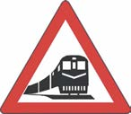
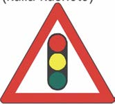
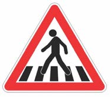
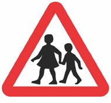
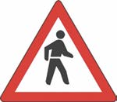
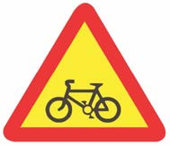

Zoezi la 1
1.
Oanisha picha au maelezo ya picha na maana yake.
Jedwali lenye safu mbili.
Safu ya kwanza, picha za alama za usalama.
Picha ya kwanza inaonyesha alama ya reli inakatisha. Kuna mchoro wa pembe tatu. Ndani yake kuna picha ya gari moshi.
Picha ya pili inaonyesha alama ya taa za usalama barabarani. Alama hii ina mchoro wa pembe tatu, ndani yake kuna michoro ya taa tatu. Taa ya kwanza ina rangi nyekundu, inayofuata ina rangi ya njano na ya tatu ina rangi ya kijani.
Picha ya tatu inaonyesha alama ya kivuko cha waenda kwa miguu. Kuna mchoro wa pembe tatu. Ndani yake kuna michoro ya mistari meupe na meusi na kuna mtu anavuka barabara.
Picha ya nne inaonyesha alama ya kivuko cha watoto. Alama hii ina mchoro wa pembe tatu. Ndani yake kuna picha ya watoto wawili wameshikana mikono wanatembea.
Picha ya tano inaonyesha alama ya kivuko cha watembea kwa miguu. Kuna mchoro wa pembe tatu. Ndani yake kuna michoro ya mistari meupe na meusi na kuna mtu anavuka barabara.
Picha ya sita inaonyesha alama ya kituo cha basi. Kuna mchoro wa duara wenye rangi ya bluu kwa ndani na picha ya gari aina ya basi.
Picha ya saba inaonyesha alama ya daraja jembamba. Kuna mchoro wa pembe tatu. Ndani yake kuna mchoro wa mistari inayowakilisha daraja.
Picha ya nane inaonyesha alama ya waendesha baisikeli. Kuna mchoro wa pembe tatu, ndani yake kuna rangi ya njano na picha ya baisikeli.
Safu ya pili, maana za alama.
A. Alama ya taa za usalama barabarani
B. Alama ya kivuko cha watoto
C. Alama ya reli inakatisha
D. Alama ya watembea kwa miguu
E. Alama ya daraja jembamba
F. Alama ya waendesha baiskeli
G. Alama ya kivuko cha waenda kwa miguu
H. Alama ya kituo cha basi
| Picha | Maana yake |
|---|---|
|
(1)
 |
A. Alama ya taa za usalama barabarani |
|
(2)
 |
B. Alama ya kivuko cha watoto |
|
(3)
 |
C. Alama ya reli inakatisha |
|
(4)
 |
D. Alama ya watembea kwa miguu |
|
(5)
 |
E. Alama ya daraja jembamba |
|
(6)
|
F. Alama ya waendesha baiskeli |
|
(7)

|
G. Alama ya kivuko cha waenda kwa miguu |
|
(8)
 |
H. Alama ya kituo cha basi |
| Picha | 1 | 2 | 3 | 4 | 5 | 6 | 7 | 8 |
|---|---|---|---|---|---|---|---|---|
| Maana yake |
2.
Kwa nini unashauriwa kuzingatia alama za usalama barabarani?